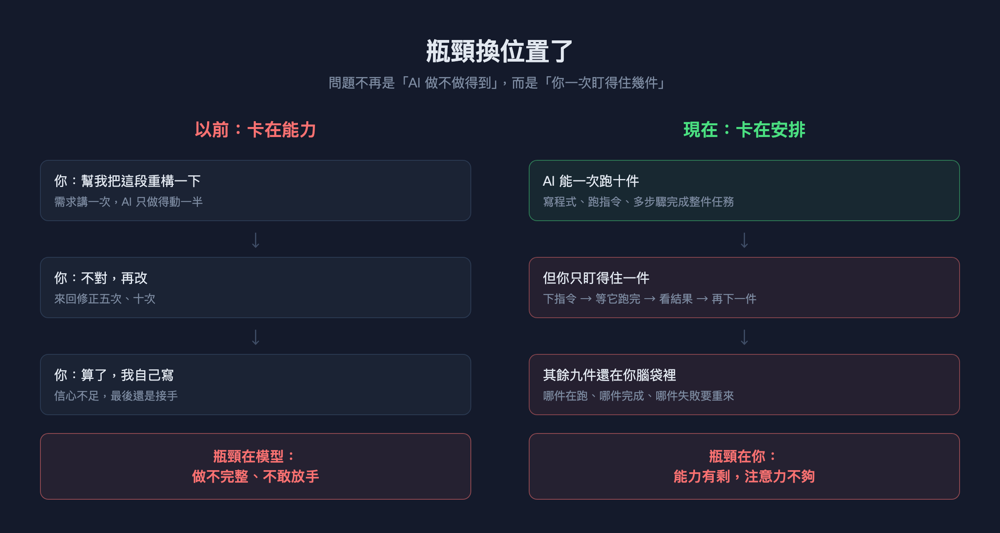
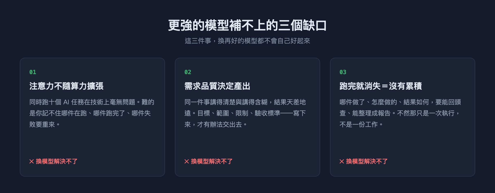
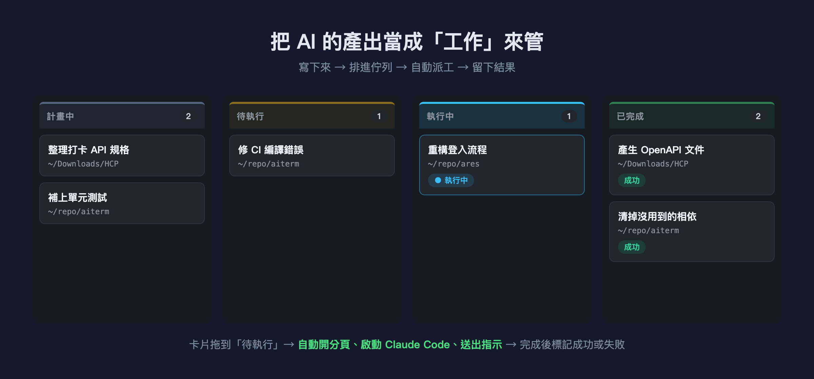
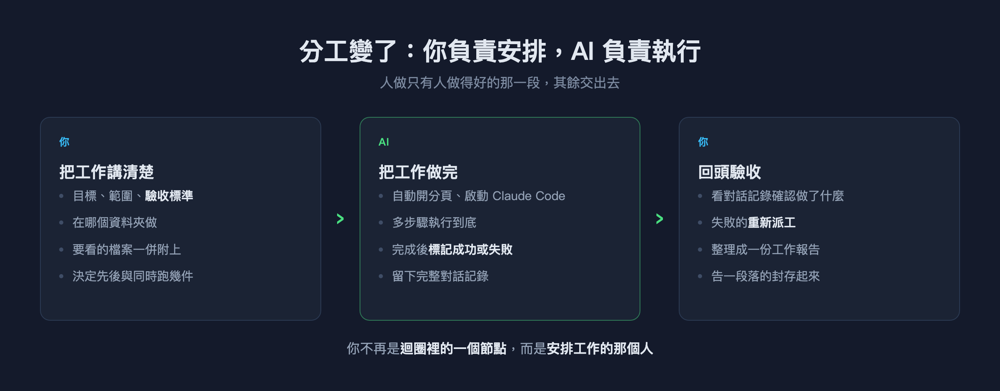

我的工具變快了，我沒有
AI 能同時做十件事，我一個晚上只做完兩件。問題不在模型，在工作沒有被安排。
上週三晚上，我列了六件想在睡前解決的事：整理一份 API 規格、補幾個單元測試、修一個 Windows 上的編譯錯誤、清掉沒用到的相依套件、重構一段登入流程、更新 README。
每一件，Claude Code 都做得到。不是「大概做得到」，是真的做得完——包含讀檔案、跑指令、看錯誤訊息、自己修、再跑一次。
那天晚上我推進了兩件。
不是因為 AI 卡住了。是因為我一次只能盯一件：貼上需求、看它開始跑、等它跑完、確認結果、再開始下一件。中間那段等待，我沒辦法拿去做別的事——因為我知道一旦離開，回來就忘了它跑到哪、有沒有出錯、下一件該做什麼。
我的工具變快了，我沒有。
瓶頸換位置了
值得停下來想一下：兩年前我們抱怨 AI 的方式，跟現在完全不一樣。
以前是「它做不完整」「改五次還是不對」「算了我自己寫」。那是能力的問題，答案自然是等更強的模型。
現在模型真的變強了，抱怨卻變成「我不知道那件事跑完了沒」「昨天那個失敗的我忘了重跑」「這禮拜到底做了哪些」。這已經不是能力問題了。

差別在於：第一種問題，換個模型就會改善；第二種不會。
再強十倍的模型也不會幫你記得哪件事在跑。它甚至讓情況更糟——因為它跑得更快、能接的事更多，而你能同時追蹤的事情數量，跟兩年前一模一樣。
更強的模型補不上的三個缺口
我把那天晚上真正卡住我的東西拆開來看，是三件事，而且沒有一件跟模型有關。

第一，注意力不隨算力擴張。 同時跑十個 AI 任務在技術上毫無問題——開十個分頁就好。難的是你記不住哪件在跑、哪件跑完了、哪件失敗要重來。人類工作記憶大概能同時抓住四到五個東西，這個數字不會因為你買了更好的顯示卡而改變。
第二，需求品質決定產出。 同一件事，「幫我整理一下打卡的 API」和「讀 ~/Downloads/HCP 底下的三個封包記錄，整理出登入與打卡兩個端點的 OpenAPI 規格，產出 LoginAndGet.yaml 與 PounchCard.yaml，含請求與回應範例」，得到的東西天差地遠。
前者你會來回修五次，後者一次就對。而寫得出後者的前提是——你得先把它寫下來。這件事沒有人能替你做，但一旦寫下來了，這份工作就變成可以交出去的。
第三，跑完就消失等於沒有累積。 我那天做完的兩件事，隔天早上就只剩下一個模糊印象。哪件做了、怎麼做的、結果如何，全在一個已經關掉的終端機分頁裡。到了週報時間，我得憑記憶重建一遍。
那不是工作，那只是一次執行。
這其實是個老問題
有趣的是，這三個問題，軟體業早就有答案了。
我們發明看板、工單系統、站立會議，不是因為工程師不會寫程式，而是因為多個執行者同時工作時，需要有人安排。誰做什麼、什麼時候做、做完了沒、做出來的東西在哪——這些問題跟每個執行者有多厲害無關。
奇怪的是，當 AI 成為執行者之後，這一整套東西不見了。
我們把 AI 當成一個「更聰明的自動完成」——開個對話框、問一句、拿回答案、關掉。沒有佇列、沒有狀態、沒有記錄。就好像請了一個很能幹的同事，卻不給他工單系統，全靠當面交代跟事後口頭回報。
同事只有一個的時候還行。同事能同時做十件事的時候，這樣不行。
把 AI 的產出當成「工作」來管
想清楚這件事之後，做法就很直接了：AI 執行的東西，應該跟人執行的東西用同一套方式管理。
寫下來、排進佇列、自動分派、留下結果。

我把這個想法做進了自己每天在用的終端機。四個欄位：計畫中、待執行、執行中、已完成。一件事就是一張卡片——標題、要在哪個資料夾做、詳細指示，需要的話附上檔案。
把卡片拖到「待執行」，剩下的就不用管了：系統自動開一個分頁、啟動 Claude Code、把指示送過去，做完自動搬到「已完成」並標上成功或失敗。同時跑幾件由你決定，不會一次全部塞出去。
那天晚上的六件事，如果是現在，我會花十五分鐘把六張卡片寫好、排進去，然後去做別的事。
分工變了
真正的轉變不在「省時間」，而在你在這個流程裡的角色變了。

以前你是迴圈裡的一個節點：下指令 → 等 → 確認 → 下一個指令。整條流程的速度上限，是你回覆的速度。
現在你做的是只有你做得好的那一段——把工作講清楚、決定先後、驗收結果。中間那段執行，交出去。
這也讓前面那三個缺口各自有了對應的位置：
- 注意力 → 卡片替你記住狀態。哪件在跑、哪件完成、哪件失敗，看一眼就知道，不必留在腦袋裡。
- 需求品質 → 因為要寫進卡片，你自然會把目標和驗收標準想清楚。（如果懶得寫，還可以讓 AI 先把你隨手打的幾句話改寫成一份完整的指示——但決定要不要採用的還是你。）
- 累積 → 每件完成的工作都留著完整的對話記錄。想知道上週做了什麼，讓 AI 把整個看板讀過一遍，整理成一份報告；告一段落的封存起來，看板只留正在進行的事。
結論
我不覺得「更強的模型」是錯的方向。模型當然應該繼續變強。
但如果你也有過那種「明明工具這麼強，事情卻沒有變快」的感覺，也許問題不在你用的模型，而在你的工作根本沒有被安排過。
AI 再厲害，工作還是得有人安排。而那個人，目前為止還是你。
AITerm 是我開發的跨平台 AI 終端機，上面提到的工作看板、自動派工、工作報告與封存都內建在裡面，開源、Apache 2.0 授權，macOS / Windows / Linux 都能跑。
🌐 官方網站：https://aiterm.win/ 💻 原始碼與下載：https://github.com/jamesju9999/AITERM
如果這篇對你有幫助，歡迎幫我按個拍手（最多可以拍 50 下哦），也歡迎追蹤我，後續還會有更多 AI 輔助開發的實戰分享。